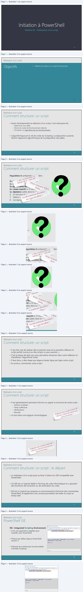
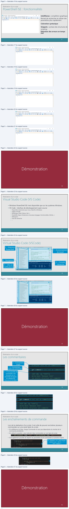
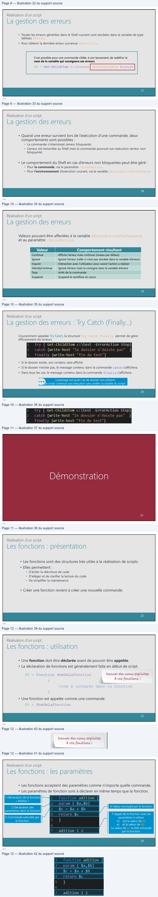
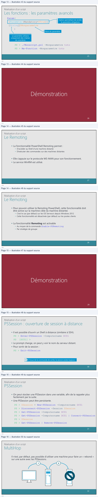
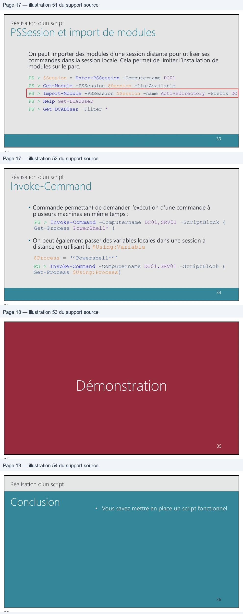

Transcription du document du Drive TSSR. La mise en forme est adaptée au Web ; les compléments IA du portail sont présentés séparément.
Module 05 – Réalisation d’un script
1
1
Réalisation d’un script
2
2
Réalisation d’un script
• Avant d’entreprendre la rédaction d’un script, il est nécessaire de :
• Déterminer son utilité
• Décrire le mode de fonctionnement attendu
• Formaliser un algorithme de son fonctionnement
• L’algorithmique est la clé de voûte du Scripting. La diapositive suivante
illustre l’approche algorithmique de la préparation des pâtes.
3
3
Réalisation d’un script
Algorithme de préparation des pâtes :
Proposition 1 :
Remplir une casserole d'eau
La mettre sur le feu
Mettre les pâtes dans la casserole
Les laisser cuire 10 à 15 minutes
Les égoutter
1.
Remplir une casserole d’eau
2.
Mettre du sel
3.
La mettre sur le feu
4.
Laisser bouillir
5.
Mettre les pâtes dans la casserole
6.
En fonction du type de pâtes
7.
Définir la durée de la cuisson
8.
Les égoutter
4
4
Réalisation d’un script
Comment structurer un script
• Avant d’entreprendre la rédaction d’un script, il est nécessaire de :
• Déterminer son utilité
• Décrire le mode de fonctionnement attendu
• Formaliser un algorithme de son fonctionnement
• L’algorithmique est la clé de voûte du Scripting. La diapositive suivante
illustre l’approche algorithmique de la préparation des pâtes.
3
3
Réalisation d’un script
Comment structurer un script
AlgorithmeProposition de1 : préparation des pâtes :
1.RemplirRemplirune unecasserolecasseroled'eaud’eau
2.La mettreMettresurduleselfeu
3.MettreLa mettreles pâtessurdansle feula casserole
4.Les laisserLaisser cuirebouillir10 à 15 minutes
5.Les égoutterMettre les pâtes dans la casserole
6. En fonction du type de pâtes
7. Définir la durée de la cuisson
8. Les égoutter
4
4Lean wepout 77°’ we
cevep> de C “250W est
Se
amw“les so
redes Eyes
te
Cre
|
puree exact ewFoner”
qucyre gepace? 2
|
Réalisation d’un script
• Il est très rare de réaliser dès le premier essai et la première réflexion le
script parfait (surtout sur des scripts un peu avancés…).
• C’est la phase de tests qui nous permettra d’avancer dans notre réflexion et
d’améliorer l’algorithme initial.
• Il faut donc y aller étape par étape et tester ligne par ligne notre script.
• Et surtout, commentez votre script !
5
5
Réalisation d’un script
• Il est généralement pertinent d’écrire sur papier la structure de notre script :
• Actions à réaliser
• Tests à effectuer
• Vérifications
• Boucles
• Le tout dans une logique chronologique
6
6
prepare soworereava ae
ecrve estouteau une
N
pert aeLee
Réalisation d’un script
• La réalisation d’un script peut se faire à l’aide d’un IDE compatible avec
PowerShell.
• Un IDE est un logiciel dédié à l’écriture de code informatique en y ajoutant
des fonctions de correction ou de vérification du code.
• ISE est un logiciel qui propose un environnement d’écriture des commandes
PowerShell, et également une console permettant de tester le script en
temps réel.
7
7
Réalisation d’un script
ISE : Integrated Scripting Environment
• C’est une application adaptée pour
travailler avec PowerShell
• Présent par défaut depuis PowerShell
version 3
• Présente de nombreuses fonctionnalités
orientées Scripting
8
8
BdAint Windows Pomerhel SE
Fle
Gat
View
Tole
Debug
Add-ons
Help
S@b4g0a\9¢\|>
esse
8 Fmolmæ.
[unitastgutt
| Micoso PoweShaiS proepet | routagepst | Unesspar"X
1
write-Host "Powershell
c'est bien!"
PS C:\> Write-Host "PowerShell
c'est bien!"
Powershell
c'est
bien!
Ps C:\>
Competed

Réalisation d’un script
IntelliSense : complétion graphique
Permet de rechercher et utiliser des
paramètres plus rapidement
Coloration syntaxique
Snippets : syntaxe des structures de
scripting
Détection des erreurs en temps
réel
9
9
10
10
Æ Administrateur :Windows PowerShell ISE
—
Oo
x
Fichier
Modifier
Afficher
Outils
Déboguer
Composants additionnels
Aide
& H
4
on»
49
Se
@iAoao|&,.
Sans titrel.ps1* X
©
1
Réalisation d’un script
• Windows PowerShell ISE n'est disponible que sur les systèmes Windows.
• VS Code : interface de développement open source
• Disponible notamment pour Linux, MacOS et Windows
• Légère et fluide
• Multilingue (Shell, Python, Perl…)
• Possibilité d'ajout d'extensions (nouveaux langages, fonctionnalités, GitHub…)
• Débogueur
• Outil de recherche
• …
11
11
Réalisation d’un script
1
3
3 – Extension
PowerShell
1 – Environnement
de travail
4 – Navigation
2
2 – Console
interactive
5 – Infos et
notifications
4
5
12
12
POWERSHELL 2
magnon
rows. © À > untitied-1
©
CE
©
=
1
function Get-ComputerDetails
«
‘Add-ADCentrataccessPokcyMember
2
{
b
Add-ADComputersenceAccount
.
”
f
Add-ADOomainControlerPessmordRaphca.
This script {s used to get useful information from à computer.
Add-ApprCentConnectionGru
D CM
ee
Add-ApprChentPactage
12
This script is used to get useful information from @ computer.
Cure:
Add-AppPétlshingserees
13
-Explicit Credential Logons (Event ID 4648)
BIN
Bretons
16
CrovershelL Logs to find Powershell scripts which hove boon executed
cs gpcustemroute
13
13
Réalisation d’un script
1 – Commentaire
simple
3 – Commentaire
après une commande
5 – 7 Il est possible de
commenter une
structure ou un
ensemble de lignes
en utilisant les
chevrons et le dièze.
14
14
Réalisation d’un script
Lors de la réalisation d’un script, il est utile de pouvoir enchaîner plusieurs
commandes sur une seule ligne du script.
• À la différence du Pipe, chaque commande ne sera pas dépendante du résultat de la
commande précédente.
• On utilise le caractère ; pour exécuter deux commandes sur une ligne de script.
• Il est également possible de répartir les paramètres d’une commande sur plusieurs lignes.
Le « Backtick » ou « Anti-Quotte »
s’obtient avec « Alt Gr », « 7 »
puis « espace ».
15
15
16
16
Get-LocalUser
-Name
; Get-LocalGroup
-Name
$x=Read-Host
($x
-gt
10)
Wirite-Host
ForegroundColor
red
ÿ
}
($x-1t
10)

Réalisation d’un script
• Toutes les erreurs générées dans le Shell courant sont stockées dans la variable de type tableau $Error.
• Pour obtenir la dernière erreur survenue $Error[0].
Il est possible pour une commande ciblée, à son lancement, de redéfinir le
nom de la variable qui consignera ses erreurs
PS > Get-ChildItem C:\Dossier –ErrorVariable Erreurs
17
17
Réalisation d’un script
• Quand une erreur survient lors de l’exécution d’une commande, deux
comportements sont possibles :
• La commande s’interrompt (erreur bloquante)
• L’erreur est remontée au Shell mais la commande poursuit son exécution (erreur non
bloquante)
• Le comportement du Shell en cas d’erreurs non bloquantes peut être géré : • Pour la commande, via le paramètre –ErrorAction • Pour l’environnement d’exécution courant, via la variable $ErrorActionPreference
18
18
Réalisation d’un script
Valeurs pouvant être affectées à la variable $ErrorActionPreference et au paramètre –ErrorAction
Valeur
Comportement résultant
Continue
Affiche l’erreur mais continue (niveau par défaut)
Ignore
Ignore l’erreur (celle-ci n’est pas stockée dans la variable d’erreur)
Inquire
Interaction avec l’utilisateur pour savoir l’action a réaliser
SilentlyContinue
Ignore l’erreur mais la consigne dans la variable d’erreur
Stop
Arrêt de la commande
Suspend
Suspend le workflow en cours
19
19
Réalisation d’un script
Couramment appelée Try Catch, la structure Try Catch Finally permet de gérer efficacement les erreurs.
• Si le dossier existe, son contenu sera affiché.
• Si le dossier n’existe pas, le message contenu dans la commande catch s’affichera.
• Dans tous les cas, le message contenu dans la commande finally s’affichera.
L’avantage est qu’en cas de dossier non présent,
le script continue son exécution sans arrêter la totalité du script.
20
20
{ Get-ChildItem c:\test
-ErrorAction Stop}
{write-host
}
{write-host
}
| Valeur | Comportement résultant |
| Continue | Affichel’erreurmaiscontinue(niveaupardéfaut) |
| Ignore | Ignore l’erreur (celle-ci n’est pas stockée dans la variable d’erreur) |
| Inquire | Interactionavecl’utilisateurpoursavoirl’actionaréaliser |
| SilentlyContinue | Ignorel’erreurmaislaconsignedanslavariabled’erreur |
| Stop | Arrêtdelacommande |
| Suspend | Suspendleworkflowencours |
21
21
Réalisation d’un script
• Les fonctions sont des structures très utiles à la réalisation de scripts.
• Elles permettent :
• D’éviter la réécriture de code
• D’alléger et de clarifier la lecture du code
• De simplifier la maintenance
• Créer une fonction revient à créer une nouvelle commande.
22
22
Réalisation d’un script
• Une fonction doit être déclarée avant de pouvoir être appelée.
• La déclaration de fonctions est généralement faite en début de script.
Donner des noms explicites
PS > Function NomDeLaFonction
à vos fonctions !
{
Code à intégrer dans la fonction }
• Une fonction est appelée comme une commande.
PS > NomDeLaFonction
23
23
Réalisation d’un script
• Les fonctions acceptent des paramètres comme n’importe quelle commande.
• Les paramètres de fonction sont à déclarer en même temps que la fonction.
1-Déclaration de la fonction
« Adition »
4-Valeur renvoyée par la fonction
2-Déclaration des
paramètres dans la fonction
3-Commande exécutée par
la fonction
7-Appel de la fonction avec les
paramètres à utiliser.
Ici 1 est la valeur de $a
et 2 et la valeur de $b .
La valeur de $c va être renvoyée
par la fonction.
24
24
——
Pe
1
5
adition
;

Réalisation d’un script
Param(
Option permettant de rendre
le paramètre obligatoire
[Parameter(Mandatory=$True)] [String]$Monparametre
)
Nom du paramètre
Le paramètre utilisera
uniquement des chaînes
de caractères
PS > ./Monscript.ps1 –Monparametre toto PS > Ma-Fonction –Monparametre toto
25
25
26
26
Réalisation d’un script
• La fonctionnalité PowerShell Remoting permet :
• D’accéder au Shell d’une machine distante
• D’exécuter des commandes sur des machines distantes
• Elle s’appuie sur le protocole WS-MAN pour son fonctionnement.
• Le service WinRM est utilisé.
27
27
Réalisation d’un script
• Pour pouvoir utiliser le Remoting PowerShell, cette fonctionnalité doit
être active sur la machine cible (la machine distante)
• C’est le cas (par défaut) sur les OS Serveurs depuis Windows 2012
• Cette fonctionnalité est désactivée (par défaut) sur les postes clients
• La fonctionnalité Remoting est activable • Au moyen de la commande Enable-PSRemoting • Par stratégie de groupe
28
28
29
29
Réalisation d’un script
• Il est possible d’ouvrir un Shell à distance (similaire à SSH).
PS > Enter-PSSession -Computername DC01 PS [DC01] >
• Le prompt change, on peut y voir le nom du serveur distant.
• Pour sortir de la session :
PS > Exit-PSSession
À l’issue de la commande de sortie, la session existe toujours.
30
30
Réalisation d’un script
• On peut stocker une PSSession dans une variable, afin de la rappeler plus
facilement par la suite.
• Une PSSession peut être persistante.
PS > $Session = New-PSSession -Computername DC01 PS > Disconnect-PSSession -Session $Session PS > Get-PSSession -Computername DC01 PS > Get-PSSession -Computername DC01 | Connect-PSSession PS > $Session PS > Get-PSSession | Remove-PSSession
31
31
Réalisation d’un script
Il n’est, par défaut, pas possible d’utiliser une machine pour faire un « rebond »
sur une autre avec les PSSessions.
1
2
32
32

Réalisation d’un script
On peut importer des modules d’une session distante pour utiliser ses
commandes dans la session locale. Cela permet de limiter l’installation de
modules sur le parc.
PS > $Session = Enter-PSSession -Computername DC01
PS > Get-Module -PSSession $Session -ListAvailable
PS > Import-Module -PSSession $Session –name ActiveDirectory –Prefix DC
PS > Help Get-DCADUser
PS > Get-DCADUser –Filter *
33
33
Réalisation d’un script
• Commande permettant de demander l’exécution d’une commande à
plusieurs machines en même temps :
PS > Invoke-Command -Computername DC01,SRV01 –ScriptBlock {
Get-Process PowerShell* }
• On peut également passer des variables locales dans une session à distance en utilisant le $Using:Variable
$Process = ‘’Powershell*’’
PS > Invoke-Command -Computername DC01,SRV01 –ScriptBlock {
Get-Process $Using:Process}
34
34
35
35
Réalisation d’un script
• Vous savez mettre en place un script fonctionnel
36
36
